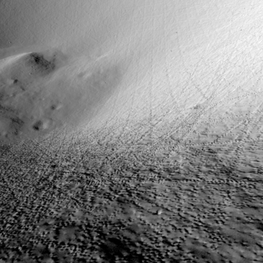
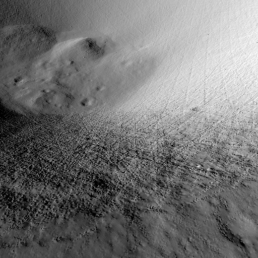

Adapting Stereo Vision From Objects to 3D Lunar Surface Reconstruction
with the StereoLunar Dataset
Clémentine Grethen1, Simone Gasparini1, Géraldine Morin1, Jérémy Lebreton2, Lucas Marti2, Manuel Sanchez-Gestido3
1IRIT, University of Toulouse, France 2Airbus Defense & Space, France 3European Space Agency (ESA), ESTEC, Netherlands
International Conference on Computer Vision (ICCV) Workshop “From Street to Space”, 2025


Abstract
Accurate 3D reconstruction of lunar surfaces is essential for space exploration. However, existing stereo vision reconstruction methods struggle in this context due to the Moon’s lack of texture, difficult lighting variations, and atypical orbital trajectories. State-of-the-art deep learning models, trained on human-scale datasets, have rarely been tested on planetary imagery and cannot be transferred directly to lunar conditions. To address this issue, we introduce LunarStereo, the first open dataset of photorealistic stereo image pairs of the Moon, simulated using ray tracing based on high-resolution topography and reflectance models. It covers diverse altitudes, lighting conditions, and viewing angles around the lunar South Pole, offering physically grounded supervision for 3D reconstruction tasks. Based on this dataset, we adapt the MASt3R model to the lunar domain through fine-tuning on LunarStereo. We validate our approach through extensive qualitative and quantitative experiments on both synthetic and real lunar data, evaluating 3D surface reconstruction and relative pose estimation. Our experiments show significant improvements over zero-shot baselines , demonstrating that our method can generalize to planetary-scale data when the training is properly adapted. This work provides the most realistic and physically grounded benchmark to date for lunar stereo 3D reconstruction, and paves the way for vision models capable of robust cross-scale generalization in extraterrestrial environments.
1st Contribution: StereoLunar Dataset Overview

Our dataset is based on DEMs from LRO and uses a physically-based renderer to produce thousands of stereo pairs with dense depth maps, camera poses, and surface normals. The rendering pipeline integrates BRDF models, realistic sun trajectories, and variable noise conditions.
1st Contribution: StereoLunar Dataset Examples
Select a stereo pair to visualize some examples of the StereoLunar dataset (2D image + 3D scene):


2nd Contribution: Improving Lunar Pose and Geometry Estimation
Fine-tuning MASt3R on our StereoLunar dataset leads to notable improvements in domain adaptation to extreme conditions, such as the highly untextured and repetitive lunar terrain.
Compare Lunar 3D Reconstructions
Click a button to compare Ours and MASt3R reconstructions:


Pair 1


Pair 2


Pair 3